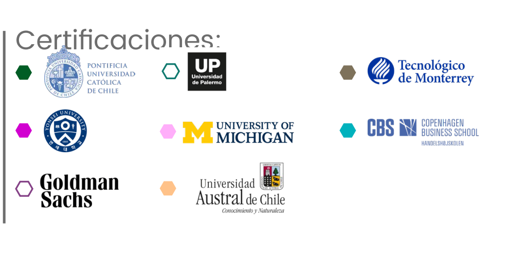

🛡️ Licenciatura Ejecutiva en Seguridad Pública
NO Aplica EQ | Categoría: Ciencias Sociales
📖 ¿De qué trata esta Licenciatura?
Forma profesionales capaces de diseñar, evaluar y ejecutar políticas públicas de seguridad, con base en metodologías científicas, criminológicas y jurídicas, enfocadas en la prevención, atención y combate al delito.
📌 Detalles del Programa
- ⏳ Duración: 4 años (12 cuatrimestres).
- 🛡️ Modalidad: 100% en línea.
- Plataforma: Blackboard con acceso 24/7.
- Clases: 1 a 2 sesiones semanales opcionales (grabadas).
- Soporte: Asistencia Lince disponible todo el año.
- Recursos: Biblioteca virtual, paquetería Office y herramientas digitales.
🌟 Razones para Estudiar en UVM
- Doble Titulación: Posibilidad de obtener título en EE.UU. con National Louis University.
- Certificaciones Coursera: Materias con certificación laboral integrada en el plan de estudios.
- Internacionalización: Seminarios, viajes académicos y ponentes internacionales.
- Alta empleabilidad: Más del 80% mejora su situación laboral tras egresar (Ipsos/UVM 2020).
💼 Oportunidades Laborales
Podrás desempeñarte en instituciones y organizaciones públicas o privadas, como:
- 📌 Secretarías de Seguridad Pública: Planeación, análisis y gestión de políticas de seguridad ciudadana.
- 📌 Empresas de seguridad privada: Consultorías sobre servicios estratégicos de vigilancia y protección de activos.
- 📌 Centros de reinserción y justicia: Intervención en programas penitenciarios y rehabilitación.
- 📌 Instituciones de investigación: Desarrollo de estudios criminológicos, diagnósticos sociales y evaluación de políticas públicas.
- 📌 Consultoría especializada: Asesoramiento en prevención del delito, violencia de género y delitos de alto impacto.
🎓 Certificaciones Internacionales
🎯 Tips para Vender la Licenciatura
- 💡 "Perfecta si te interesa la prevención del delito, el análisis forense y la creación de políticas públicas en seguridad."
- 🔍 "Podrás trabajar en áreas de inteligencia, investigación criminal, desarrollo comunitario y análisis de políticas públicas."
- 📌 "Tendrás herramientas en criminología, derecho penal, métodos de investigación y administración pública."
🛑 Objeciones Comunes y Respuestas
- ❓ "¿Debo ser policía para estudiar esto?"
✅ "No. La carrera es para formar estrategas y analistas en seguridad, no solo operativos." - ❓ "¿Tiene campo laboral fuera del gobierno?"
✅ "Sí. Puedes trabajar en empresas de seguridad privada, consultorías, ONGs y más." - ❓ "¿Es pesada la carga legal o técnica?"
✅ "Se comienza desde fundamentos y se avanza gradualmente. Además, hay acompañamiento constante."